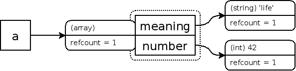
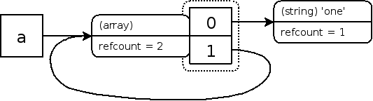

PHP的垃圾回收机制:
1. PHP可以自动进行内存管理,清除不需要的对象,主要使用了引用计数
2. 在zval结构体中定义了ref_count和is_ref , ref_count是引用计数 ,标识此zval被多少个变量引用 , 为0时会被销毁
is_ref标识是否使用的 &取地址符强制引用
3. 为了解决循环引用内存泄露问题 , 使用同步周期回收算法
比如当数组或对象循环的引用自身 , unset掉数组的时候 , 当refcount-1后还大于0的 , 就会被当成疑似垃圾 , 会进行遍历 ,并且模拟的删除一次refcount-1如果是0就删除 ,如果不是0就恢复
顽固垃圾的产生过程
<?php
$a = "new string";
?>代码中，$a变量内部存储信息为
a: (refcount_gc=1, is_ref_gc=0)='new string'
当把$a赋值给另外一个变量的时候，$a对应的zval的refcount_gc会加1
<?php
$a = "new string";
$b = $a;
?>此时$a和$b变量对应的内部存储信息为,$a和$b同时指向一个字符串"new string" ,它的refcount变成2
a,b: (refcount_gc=2, is_ref=0)='new string'
当用unset删除$b变量时，"new string" 的refcount_gc会减1变成1。
<?php
$a = "new string"; //a: (refcount_gc=1, is_ref_gc=0)='new string'
$b = $a; //a,b: (refcount_gc=2, is_ref=0)='new string'
unset($b); //a: (refcount_gc=1, is_ref=0)='new string'
?>对于普通的变量来说，这一切很正常，但是在复合类型变量（数组和对象）中，会发生比较有意思的事情：
<?php
$a = array('meaning' => 'life', 'number' => 42);
?>$a内部存储信息为:
a: (refcount=1, is_ref=0)=array (
'meaning' => (refcount=1, is_ref=0)='life',
'number' => (refcount=1, is_ref=0)=42
)
数组变量本身($a)在引擎内部实际上是一个哈希表，这张表中有两个zval项 meaning和number，所以实际上那一行代码中一共生成了3个zval,这3个zval都遵循变量的引用和计数原则，用图来表示:

下面在$a中添加一个元素，并将现有的一个元素的值赋给新的元素:
<?php
$a = array('meaning' => 'life', 'number' => 42);
$a['name'] = $a['meaning'];
?>那么$a的内部存储为 , "life" 的ref_count变成2 , 42的ref_count是1:
a: (refcount=1, is_ref=0)=array (
'meaning' => (refcount=2, is_ref=0)='life',
'number' => (refcount=1, is_ref=0)=42,
'name' => (refcount=2, is_ref=0)='life'
)
如果将数组的引用赋值给数组中的一个元素，有意思的事情就会发生：
<?php
$a = array('one');
$a[] = &$a;
?>这样$a数组就有两个元素，一个索引为0，值为字符one，另外一个索引为1，为$a自身的引用，内部存储如下:

a: (refcount=2, is_ref=1)=array (
0 => (refcount=1, is_ref=0)='one',
1 => (refcount=2, is_ref=1)=…
)
array这个zval的ref_count是2 , 是一个环形引用
这时对$a进行unset,那么$a会从符号表中删除，同时$a指向的zval的refcount_gc减少1.
<?php
$a = array('one');
$a[] = &$a;
unset($a);
?>那么问题就产生了，$a已经不在符号表中，用户无法再访问此变量，但是$a之前指向的zval的refcount_gc变为1而不是0，因此不能被回收，从而产生内存泄露，新的GC要做的工作就是清理此类垃圾。
为了解决循环引用内存泄露问题 , 使用同步周期回收算法 , 这种ref_count减1后还大于0的会被作为疑似垃圾
比如当数组或对象循环的引用自身 , unset掉数组的时候 , 当refcount-1后还大于0的 , 会进行遍历 ,并且模拟的删除一次refcount-1如果是0就删除 ,如果不是0就恢复